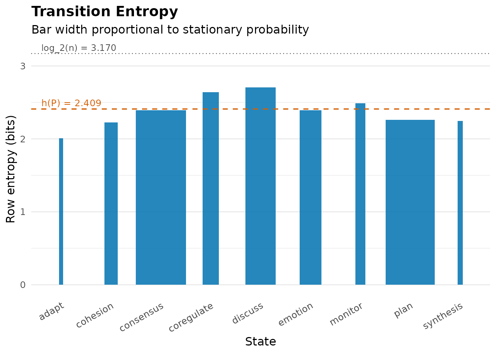
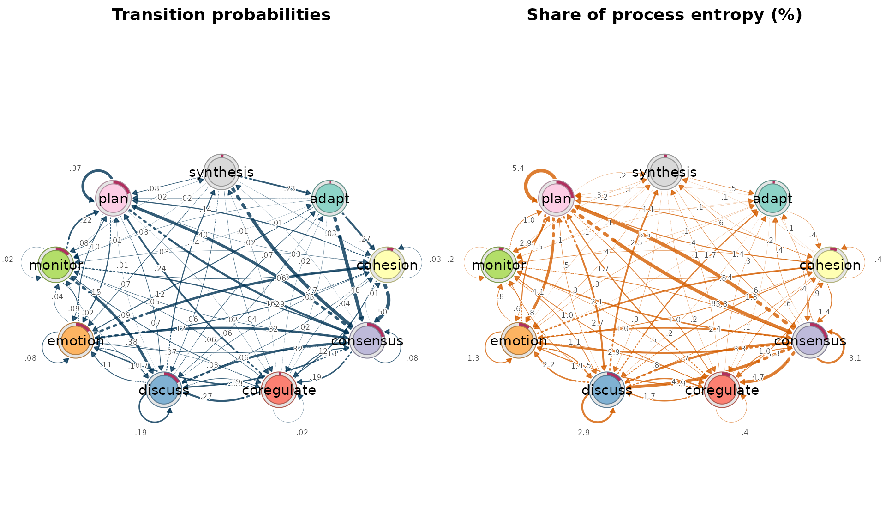
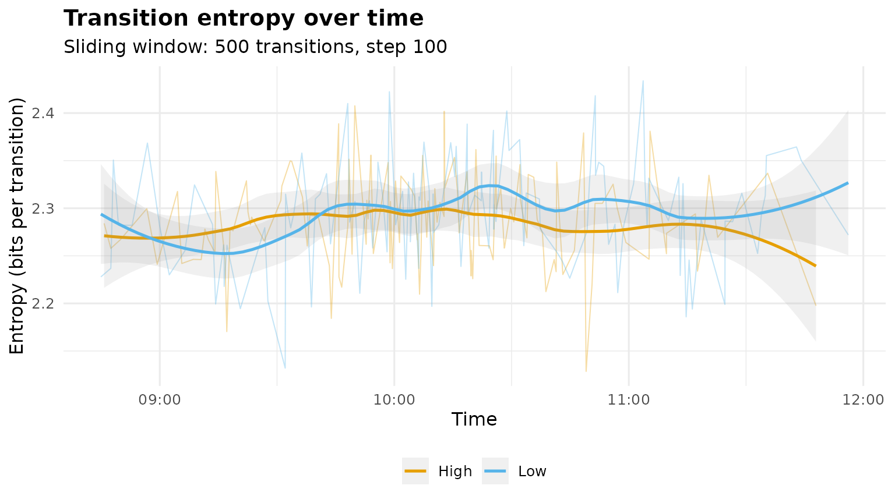
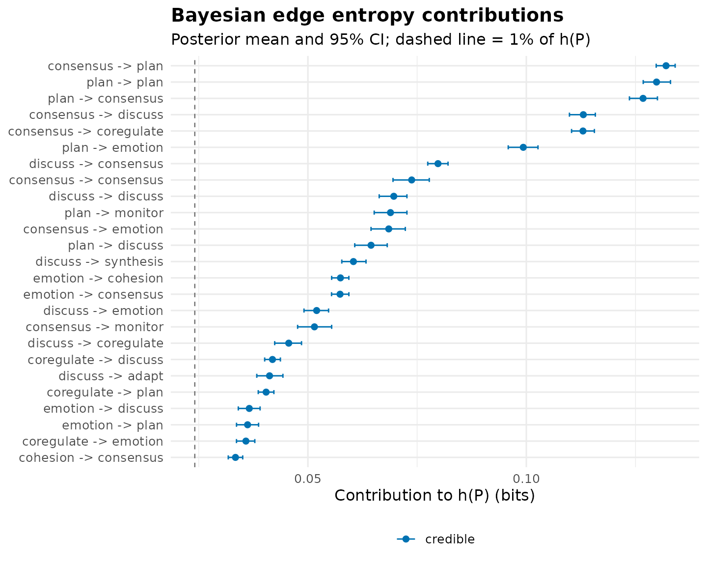

Transition Matrix Entropy
Mohammed Saqr
University of Eastern FinlandSource:
vignettes/transition-entropy.Rmd
transition-entropy.RmdHow predictable is a sequential process? The entropy rate of its transition matrix answers with a single number: the average uncertainty, in bits, about the next state given the current one (Shannon, 1948; Cover & Thomas, 2006, ch. 4),
where is the transition matrix and its stationary distribution (the eigenvector of at ). This is the quantity Krejtz et al. (2015) introduced to behavioral research as gaze transition entropy and Krejtz et al. (2025) track in real time as mobile transition matrix entropy. Nestimate computes it for any transition network, decomposes it per state and per edge, tracks it over time, and estimates it with Bayesian credible intervals.
Throughout we use the bundled group_regulation_long
data: 27,533 timestamped regulation actions by students collaborating in
groups, coded into nine states.
The entropy of a transition network
transition_entropy() accepts a fitted network, a
transition matrix, or sequence data.
net <- build_network(group_regulation_long, method = "relative",
actor = "Actor", action = "Action", time = "Time")
te <- transition_entropy(net)
te
#> Transition Entropy (9 states, bits; ceiling = 3.170)
#>
#> raw normalised
#> Entropy rate h(P) = 2.409 bits 0.760
#> Stationary H(pi) = 2.782 bits 0.878
#> Redundancy H(pi)-h = 0.373 bits 0.134
#>
#> Normalised: h(P) and H(pi) are raw / log_2(n_states) (0 = deterministic, 1 = uniform);
#> redundancy is the relative redundancy (H(pi) - h(P)) / H(pi), not raw / log_2(n_states).The call computes the entropy rate , the stationary entropy (the ceiling that would apply if consecutive actions were independent), and their difference, the redundancy. The process runs at 2.41 bits per step against a ceiling of ; the normalized entropy 0.76 is the scale-free version Krejtz et al. (2025) report. Regulation is far from scripted, but knowing the current action removes 22% of the uncertainty about the next one (relative redundancy 0.22): sequence carries real information, which is the empirical justification for modeling transitions rather than activity frequencies alone.
Which states are decision points?
is the stationary-weighted sum of per-state branching entropies . The summary and plot display those terms.
summary(te)
#> Transition Entropy Summary (bits)
#>
#> Per-state contribution to h(P):
#> state stationary row_entropy row_entropy_norm contribution
#> consensus 0.250 2.393 0.755 0.597
#> plan 0.245 2.261 0.713 0.554
#> discuss 0.152 2.706 0.854 0.411
#> emotion 0.109 2.390 0.754 0.261
#> coregulate 0.082 2.640 0.833 0.216
#> cohesion 0.067 2.225 0.702 0.148
#> monitor 0.049 2.487 0.785 0.121
#> synthesis 0.027 2.248 0.709 0.060
#> adapt 0.021 2.006 0.633 0.042
#> contribution_pct
#> 24.8
#> 23.0
#> 17.0
#> 10.8
#> 9.0
#> 6.2
#> 5.0
#> 2.5
#> 1.7
#>
#> Chain-level summary:
#> quantity raw normalised
#> entropy_rate h(P) 2.409 0.760
#> stationary H(pi) 2.782 0.878
#> redundancy H(pi)-h(P) 0.373 0.134
#> ceiling log_2(n) 3.170 1.000
#>
#> Normalised: row entropy, h(P) and H(pi) are raw / log_2(n_states), in [0, 1];
#> redundancy is the relative redundancy (H(pi) - h(P)) / H(pi).
plot(te)
Tall bars are decision points: states whose continuation is genuinely open. Short bars are scripted states whose next step is nearly determined. Bar width is the stationary probability , so bar area is the state’s additive contribution to the process entropy.
The entropy network
is a sum over transitions: edge
contributes exactly
.
entropy_network() returns the fitted network with those
terms as edge weights — the same object class as
build_network(), so it prints, summarises, and plots
identically. With scaling = "share" the weights become
percentages of
and sum to 100.
ent <- entropy_network(net, scaling = "share")
ent
#> Network (method: entropy) [directed]
#> Weights: [0.069, 5.482] | mean: 1.282
#>
#> Weight matrix:
#> adapt cohesion consensus coregulate discuss emotion monitor plan
#> adapt 0.000 0.442 0.440 0.103 0.208 0.317 0.142 0.081
#> cohesion 0.069 0.391 1.386 1.012 0.671 0.996 0.450 1.102
#> consensus 0.379 0.934 3.065 4.693 4.696 2.848 2.136 5.482
#> coregulate 0.328 0.587 1.323 0.430 1.739 1.485 1.037 1.678
#> discuss 1.712 1.317 3.315 1.895 2.897 2.160 0.770 0.471
#> emotion 0.097 2.387 2.383 0.754 1.520 1.288 0.787 1.502
#> monitor 0.146 0.469 0.852 0.481 1.071 0.634 0.212 0.964
#> plan 0.099 1.359 5.265 1.025 2.677 4.130 2.860 5.393
#> synthesis 0.542 0.182 0.566 0.220 0.277 0.298 0.086 0.310
#> synthesis
#> adapt 0.000
#> cohesion 0.080
#> consensus 0.553
#> coregulate 0.366
#> discuss 2.510
#> emotion 0.108
#> monitor 0.193
#> plan 0.166
#> synthesis 0.000
#>
#> Initial probabilities:
#> consensus 0.214 ████████████████████████████████████████
#> plan 0.204 ██████████████████████████████████████
#> discuss 0.175 █████████████████████████████████
#> emotion 0.151 ████████████████████████████
#> monitor 0.144 ███████████████████████████
#> cohesion 0.060 ███████████
#> synthesis 0.019 ████
#> coregulate 0.019 ████
#> adapt 0.011 ██
#>
#> Scaling: share
op <- par(mfrow = c(1, 2))
cograph::splot(net, minimum = 0, title = "Transition probabilities",
edge_label_digits = 2)
cograph::splot(ent, title = "Share of process entropy (%)")
par(op)The two panels separate structure from uncertainty. The probability panel shows where the process goes; the entropy panel shows where it is unpredictable. High-probability routine transitions shrink in the entropy view — observing the near-inevitable carries little information — while the thick entropy edges mark frequent transitions whose outcome is genuinely open. No new quantity is estimated: the entropy network displays the summands of the equation above, so every number inherits the defensibility of itself.
Entropy over time
A single
summarises the whole observation period. Sliding a window across the
transition stream — the design of Krejtz et al. (2025), who use
30-second windows over gaze transitions — turns entropy into a process
measure. entropy_trajectory() builds transitions within
each actor’s sequence, orders them in time, and computes one entropy
value per window.
tr <- entropy_trajectory(group_regulation_long,
action = "Action", actor = "Actor", time = "Time",
group = "Achiever", window = 500, step = 100)
summary(tr)
#> group windows mean sd min max first last
#> 1 High 123 2.286338 0.04794534 2.128561 2.407602 2.241115 2.355472
#> 2 Low 124 2.295566 0.05498775 2.132020 2.433906 2.244097 2.388426
#> change
#> 1 0.1143576
#> 2 0.1443291
plot(tr)
Each faint line is one 500-transition window stepped by 100; the bold
curve is the loess trend per achievement group. Declining entropy is
routinization — the group settling into predictable regulation; rising
entropy is exploration; a level shift marks a phase change. The
change column of the summary (last window minus first)
gives each group’s net trend. Within a window the chain is routinely
non-ergodic, so the per-window estimator weights rows by observed
occupancy rather than the eigenvector stationary distribution; over long
stationary stretches the two coincide.
Bayesian estimation
Plug-in entropy treats an edge observed three times exactly like one
observed three thousand times. entropy_bayes() places an
independent Dirichlet posterior on each row of the transition matrix
(Jeffreys prior 0.5 by default) and pushes Monte Carlo draws through the
entropy formula, so every quantity — the entropy rate, each state’s
branching entropy, each edge’s contribution — arrives with a credible
interval that reflects how much data supports it.
eb <- entropy_bayes(net, draws = 1000, seed = 1)
eb
#> Bayesian Transition Entropy (9 states, bits; Dirichlet prior 0.5, 1000 draws)
#>
#> entropy_rate: 2.411 [2.396, 2.425]
#> stationary_entropy: 2.783 [2.771, 2.796]
#> redundancy: 0.373 [0.361, 0.384]
#>
#> Edges: 78 observed; 31 credible (share of h(P) credibly > 1%).
#> Use summary() for the edge table, plot() for the posterior, and
#> $model for the pruned stable entropy network.The posterior mean sits slightly below the plug-in estimate — the
posterior integrates over sparse-count uncertainty instead of taking the
point estimate at face value — and the interval quantifies how firmly
the data pin down the process entropy. An edge is flagged
credible when its share of
credibly exceeds min_share (1% by default);
$model contains the entropy network with all other edges
zeroed — the stable entropy skeleton, safe to display without
overreading thin cells.
plot(eb)
Blue intervals are stable estimates; grey intervals rest on too few observations to distinguish their entropy share from noise at the 95% level.
When to use which
-
One process, one number —
transition_entropy(): how predictable is the process; is sequence informative at all (redundancy). -
Where the uncertainty sits —
plot(transition_entropy())for states,entropy_network()for transitions. Both display terms of the same equation; usescaling = "share"for percentage labels. -
Change over time —
entropy_trajectory(): routinization, exploration, phase shifts. Report the window size and step. -
Sparse data or formal comparison —
entropy_bayes(): credible intervals for , per-state and per-edge; group differences via the posterior draws;$modelfor a display pruned of unstable edges.
References
Cover, T. M., & Thomas, J. A. (2006). Elements of Information Theory (2nd ed., ch. 4). Wiley.
Krejtz, K., Duchowski, A., Szmidt, T., Krejtz, I., González Perilli, F., Pires, A., Vilaró, A., & Villalobos, N. (2015). Gaze transition entropy. ACM Transactions on Applied Perception, 13(1), 4:1–4:20.
Krejtz, K., Hughes, C. J., Stasiak, I., Duchowski, A., & Krejtz, I. (2025). Real-time mobile transition matrix entropy based on eye and head movements. Proceedings of ETRA ’25.
Shannon, C. E. (1948). A mathematical theory of communication. Bell System Technical Journal, 27, 379–423.